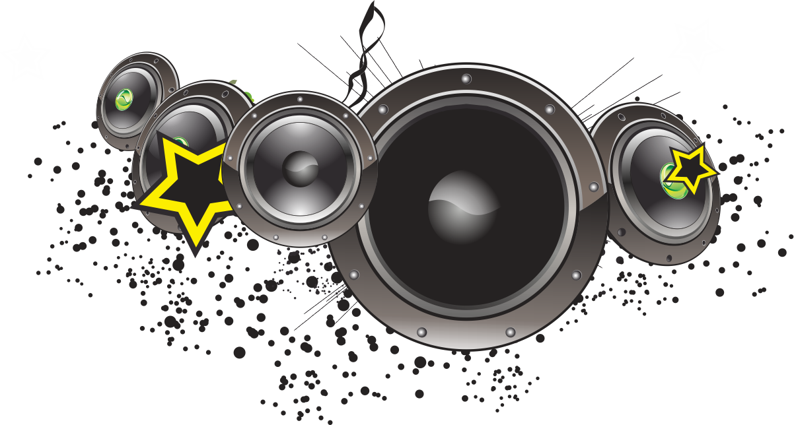

<audio id="bg-music" src="hpbd.m4a" loop></audio>

<!-- Nút hình ảnh động -->
<button id="toggle-music" style="
  position: fixed;
  top: 15px;
  right: 15px;
  width: 50px;
  height: 50px;
  background: transparent;
  border: none;
  cursor: pointer;
  z-index: 9999;
  padding: 0;
">
  
</button>

<script>
  const bgMusic = document.getElementById('bg-music');
  const toggleBtn = document.getElementById('toggle-music');
  const musicIcon = document.getElementById('music-icon');

  const iconPlay = "wave.gif";   // khi nhạc đang phát
  const iconPause = "pause.png"; // khi nhạc dừng

  // Phát nhạc lần đầu khi người dùng tương tác
  function playBgMusicOnce() {
    bgMusic.play().then(() => {
      musicIcon.src = iconPlay;
    }).catch(e => {
      console.warn("Không thể phát nhạc:", e);
    });
    document.removeEventListener('click', playBgMusicOnce);
    document.removeEventListener('touchstart', playBgMusicOnce);
  }

  // Nút bật/tắt
  toggleBtn.addEventListener('click', function (e) {
    e.stopPropagation();
    if (bgMusic.paused) {
      bgMusic.play();
      musicIcon.src = iconPlay;
    } else {
      bgMusic.pause();
      musicIcon.src = iconPause;
    }
  });

  document.addEventListener('click', playBgMusicOnce);
  document.addEventListener('touchstart', playBgMusicOnce);
</script>
